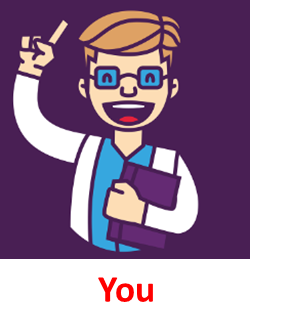
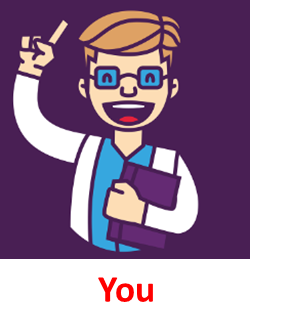

Kane Green, Founder of a Non-Ferrous company NoFerX that solves customer problems and provides them with unique solutions of materials based on their application and needs. You are hired by Kane Green as head R & D expert on Materials division to solve materials related problems. Please solve some of the customer demands given below by choosing suitable metal and alloy along with correct properties needed for that application:

 
